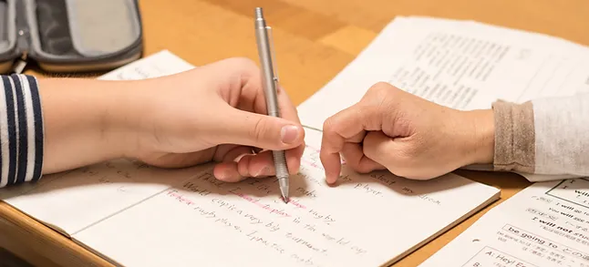

Bahasa Korea dengan materi umum yang mempelajari aspek Tata Bahasa, Kosakata , Mendengar, Membaca, Berbicara, dan Mengarang Tersedia kelas individu atau grup dengan durasi standar dan ekspres.
Program Bahasa Korea terdiri dari:
JUNIOR kelas Bahasa Korea untuk anak usia 6-15 tahun dengan standar kurikulum impor dari Korea dengan metode pengajaran kelas yang menyenangkan dan dibatasi hanya 3 peserta agar lebih fokus.
ADULT kelas Bahasa Korea untuk kepentingan studi, kerja di Korea, atau untuk mencoba menonton drama Korea tanpa subtitle. Materi ini setara TOPIK. Dengan kata lain setelah lulus dari kursus, kamu akan dapat lulus TOPIK Level 1-6. Tersedia kelas Bahasa Korea dengan durasi ekspres (KOREAN EXPRESS) di program ini. Bahasa Korea untuk persiapan ujian TOPIK atau EPS-TOPIK. KOREAN EXPRESS 1, ditujukan khusus untuk kamu belum pernah belajar Bahasa Korea sama sekali. KOREAN EXPRESS 2, ditujukan khusus untuk kamu yang sudah menguasai Bahasa Korea minimal TOPIK I level 2.
EXAM adalah kelas khusus yang dibuat secara kustom sesuai kemampuan awal berbahasa peserta (setelah mendapat test) guna memenuhi kebutuhan program untuk persiapan ujian seperti TOPIK dengan pelatihan soal-soal try-out dan penambahan materi guna meningkatkan kemampuan berbahasa Korea secara instan dalam waktu singkat untuk calon mahasiswa dan professional dengan jaminan lulus 100% untuk peserta usia 14 tahun ke atas. Untuk program ini, dapat menghubungi langsung konsultan kursus kami sesuai domisili kamu atau kelas online.
JUNIOR
Belajar Bahasa Korea untuk anak usia 6-15 tahun dengan metode menyenangkan.

ADULT
Belajar Bahasa Korea untuk anak usia 6-15 tahun dengan metode menyenangkan.

KOREAN EXPRESS
Belajar Bahasa Korea ekspress untuk menghadapi ujian TOPIK dan EPS TOPIK.
